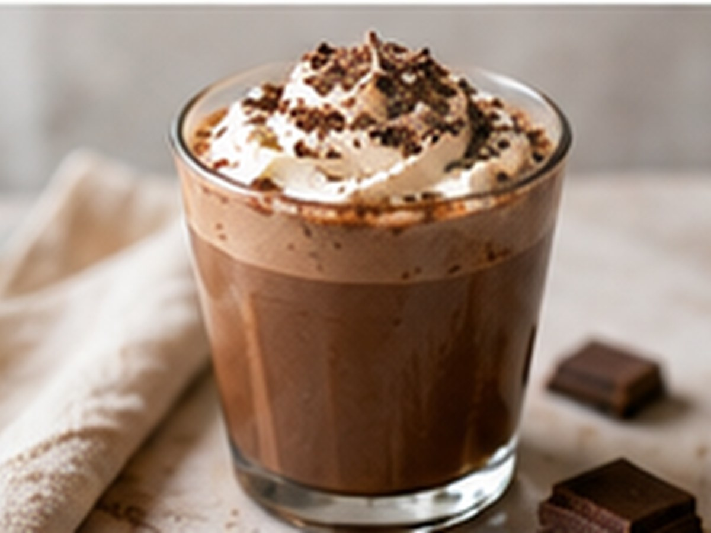

Kaffee & DessertKaffee & Dessert
Café Mocha
Kaffee trifft Schokolade.
⏱4 Min.
📶Einfach
☕1 Portion
🫘Zutaten
- Espresso1 Shot
- Schokolade20 g
- Milch150 ml
- Milchschaumetwas
📋Zubereitung
- 1Schokolade im heißen Espresso auflösen.
- 2Milch cremig aufschäumen.
- 3Milch über die Espresso-Schoko-Mischung gießen.
💡
Kaffee für dieses Rezept entdeckenLeNoKo Shop
→
Kaffee-Tipp
Mayas Rheingold bringt mit seinen Schokoladen- und Karamellnoten die perfekte Mocha-Basis.